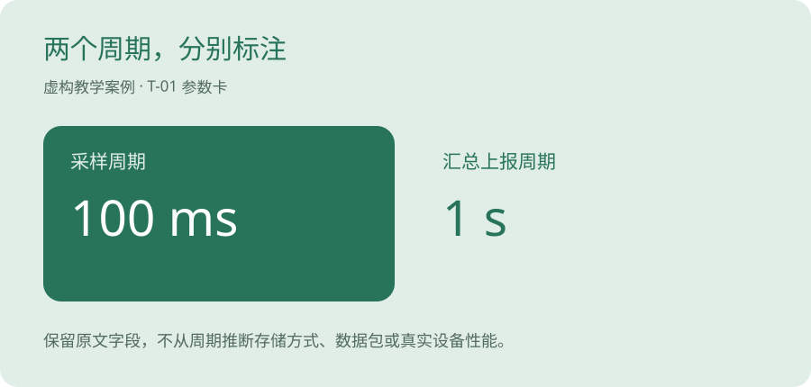

实例，用 AI 完成一篇技术分享图文
继续使用 T-01 教学材料，展示如何从选题、初稿到审校，再形成一篇可复用的原创图文。
参数说明整理出来了，想写成一篇技术分享，结果开头冒出一句「我在现场调试了三天」。实际根本没发生过这段经历。
Codex 或 DeepSeek 可以协助表达，经历和结论还得有来源。
这一篇就练习把事实写成图文。
一篇分享先装一件事
选题可以很小。就讲 T-01 里的 100 ms 采样与 1 s 汇总上报，怎样在说明里分开写。读者看完能改好一张表，就足够成为一篇练习。
说真的，刚开始写作，常常会想把账号、模型、网络和所有技巧一次讲完。材料越多，事实越不容易核查。把问题缩小，文章会更容易写完。
这也像整理工作笔记。先把一页记清楚，再把几页连成册。自己的知识库可以这样慢慢长出来。
先确定你这篇内容只讲什么
目标读者是第一次整理技术资料的上班族。文章只解释「100 ms 采样」和「1 s 上报」为什么要分开记录，材料仅限 T-01 虚构教学卡。
这份图文由本次编写助手演示生成，没有冒充你的现场经历、产品测试或已发布作品。涉及具体工具的个人实测结果需要你另行复现。
原始输入与事实边界
题目：把技术参数写清楚的一次练习。
来源：T-01 教学参数卡（虚构）。
可引用：100 ms 采样、1 s 汇总上报，以及材料声明的未知项。
不可添加：实际生产效率、设备品牌、客户反馈、工具排名、已现场验证的结论。提示词，先写结构，再写初稿
请根据以上材料写一篇面向普通上班族的技术分享。
先给标题和四段提纲，再写400字以内的正文。
必须标明虚构教学案例；不要用“我在现场”“亲测效率翻倍”等未经提供的经历。
区分采样与汇总上报；末尾给出读者可以完成的文字核对动作。
缺少的事实直接写未提供。AI 初稿，本次编写助手生成
标题：两个时间参数，别写成一件事
整理技术资料时，我会先把数值和用途拆开看。以虚构的T-01教学卡为例，100 ms对应采样周期，1 s对应汇总上报周期。把它们都写成“更新速度”，读者就不容易知道每个数字在描述什么。
更清楚的做法是分别写出参数名、数值、单位和原文字段。原文没有提供的防水等级、精度和接线方式，继续保留为未知。
你也可以拿一段公开资料练习：先圈出所有数字，再逐条检查AI是否改变了单位或补充了原文不存在的条件。审校示例，去掉没有来源的个人经历
| 初稿问题 | 修正理由 | 采用写法 |
|---|---|---|
| 「我会先……」 | 没有提供你的真实实践，不替你补写个人经验。 | 「整理技术资料时，可以先……」 |
| 两个周期是否说清 | 采样与上报需要分开呈现。 | 增加对照图及两个独立参数名。 |
| 案例是否真实 | 不能让读者误认为是真实设备测试。 | 正文开头及配图均标记「虚构教学案例」。 |
| 发布是否已完成 | 此处只制作素材。 | 保存为本地图文稿，不填浏览量和收入。 |

最终图文稿，可复制后继续审校
两个时间参数，别写成一件事
【虚构教学案例】
整理技术资料时，可以先把数值和用途拆开。T-01教学参数卡中，100 ms对应采样周期，1 s对应汇总上报周期。它们描述的是不同字段。
如果把两个数字都写成“更新速度”，读者很难判断具体含义。可以分别列出参数名、数值、单位，并回到原文字段逐条核对。
这份卡没有提供防水等级、测量精度和接线方式，整理时继续保留为未知。AI能帮助组织文字，结论仍要回到材料检查。
练习：取一段允许公开的资料，圈出所有数值和单位，再检查整理结果有没有遗漏、改写或补充没有依据的条件。从长文拆出一条摘要
摘要可作为 X 等渠道的发布素材；实际字符限制、格式与账号条件在发布时核对。本项目未登录或发布到任何社交账号。
【虚构教学案例】100 ms采样、1 s上报，对应两个不同字段。整理技术资料时，先列“参数名—数值—单位”，再逐条对照原文。原文没给出的精度、防水和接线，继续写未知。先试一段可公开资料，再决定是否扩展工作流。你需要补的最后一步
- 用自己的主工具复现，保留原始输出。
- 用自己实际采用的措辞重新审校，核实所有事实。
- 确认材料和图片有权公开，填写版本及核查日期。
- 先在知识库形成完整作品，再拆出短摘要。
把正文拆成四张图
网页里已经配好两周期的原创示意图，可以作为版式起点。它不是产品截图，也不是设备运行结果。发布前继续保留教学标注。
其实吧，图片不用先追求复杂。让手机上的读者看清数字、标题和材料性质，已经能解决主要阅读问题。
| 图片 | 画面文字 | 制作方法 |
|---|---|---|
| 第 1 张 | 两个时间参数，分别在讲什么 | 用一句问题做封面，标注虚构教学案例。 |
| 第 2 张 | 100 ms 采样；1 s 汇总上报 | 用两个并列色块分别标示，不画未经验证的内部过程。 |
| 第 3 张 | 原文没给出，就保留未知 | 列防水等级、测量精度和接线方式三项。 |
| 第 4 张 | 圈数字 → 对字段 → 查来源 | 给出一次读者能完成的动作，附材料出处与日期。 |
给 Codex 或 DeepSeek 的修改指令也要具体
对比修改前后，特别看有没有把「可以」变成「一定」，把教学卡变成真实设备，把说明写作变成工具测评。句子越顺，越要检查这些边界。
你想想看，读者认识你，往往就是从这一篇小文章开始。把知道的写清楚，把还没做过的交代清楚，后面的信任才有地方落脚。
请把正文改成面向第一次整理技术资料的上班族的表达。
保留“虚构教学案例”的标注。
每段只讲一个意思。
保留100 ms与1 s各自对应的字段。
删除没有材料支持的个人经历、效果数字和产品评价。
先列出你删改了什么，再给修订稿。先留完整稿，再拆成平台摘要
完整稿放知识库，保留原文、修订过程、配图和来源。X 可以用一条短摘要引出核心问题；Instagram 可以复用经过排版的图组。是否发出，以及当前账号和平台格式是否合适，由你本人确认。
发布前预览手机效果。标题被截断就缩短标题，图上字太小就减少同一张图承载的内容。不要为了适配平台把教学性质和来源删掉。
坦率地讲，现在不用预填浏览量和广告收入。先把四张图和正文放在一起，找一个第一次接触的人试读，问他能否分清两个周期。
冬零小怪 · 小怪行囊 · Donlin Kit
如果这篇帮你看懂了一步，可以收藏、分享给同样刚开始的朋友，也欢迎记下还没看懂的问题。
来源与核查范围
- [1] 本项目自编 T-01 教学参数卡
原创虚构材料，可直接核对全文。只用于文本整理，不是设备说明书、选型依据或现场操作指令。
核查日期 2026-10-28
本文没有推荐佣金链接。若后续建立合作，会在对应推荐处披露利益关系。